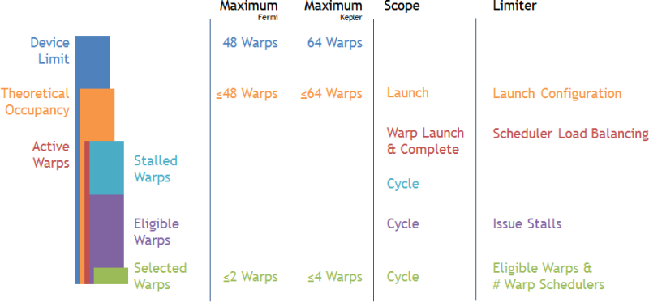
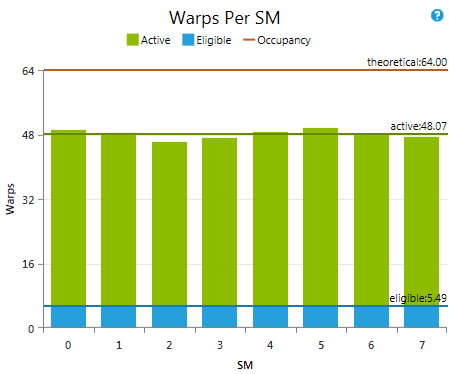
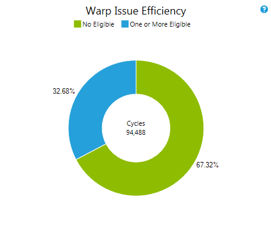

发射效率实验提供有关设备发射指令能力的信息。其核心是回答这样一个问题：设备是否能够在每个周期都成功发射指令。如果做不到这一点，就不可避免地会降低 kernel 的潜在峰值性能。理解无法连续背靠背发射指令的根因，是分析 kernel 性能时一个很好的高层级初步排查切入点。
对于计算能力 2.0 及更高的设备，每个流多处理器（SM）都配备了多个 warp 调度器。每个 warp 调度器管理一个由硬件给定的固定最大 warp 数量。这就定义了每个 SM 上 warp 的设备上限——即同时驻留在每个 SM 上的 warp 数量的上界。kernel 启动的执行配置可能因资源约束进一步限制可驻留 warp 数（详细信息见……）。理论占用率定义了 SM 上 warp 并行度的最高上限。到目前为止讨论的所有信息都是由目标设备、kernel 的源代码及启动参数静态确定的。在运行时，每个周期同时分配给某个多处理器的 warp 数被称为活跃 warp。在最佳情况下，kernel 执行期间的平均活跃 warp 数等于或非常接近理论占用率。但如果调度器未能在各 warp 调度器之间均匀地平衡工作，或者干脆没有剩余的工作可发射以填满机器，那么实际的活跃 warp 数就可能明显低于理论占用率。上述指标之间的关系如下：
Device Limit >= Theoretical Occupancy >= Active Warps
活跃 warp 集合可以理解为在运行时某一时刻可以推进执行的候选池。然而，并非所有活跃 warp 都一定能发射其下一条指令。例如，某个 warp 可能正停在 barrier 处等待其他 warp 跟上，或者尚未取到下一条指令，又或者在等待先前指令的结果就绪。按是否能发射下一条指令对活跃 warp 进行划分，可得到无法推进执行的停顿 warp子集和已准备好发射下一条指令的合格 warp子集。更具体地说，一个活跃 warp 被视为合格的条件是：指令已取回、指令所需的执行单元可用、且指令的所有依赖均已满足。按定义，这些指标之间的关系可表示为：
Active Warps == Stalled Warps + Eligible Warps
在每个周期，每个 warp 调度器都会从合格 warp 中挑选一个并发射一条或多条指令。如果某个周期没有合格 warp 可用，调度器就失去了推进执行的机会，处理单元也可能因此闲置。由于每个调度器在每个周期要么不挑选 warp，要么恰好挑选一个 warp，所以每个多处理器每个周期的已选 warp数处于 [0 .. # Warp Schedulers per SM] 范围之内。要保证每个调度器在每个周期都能发射指令，就需要每个 warp 调度器在每个周期都至少有一个合格 warp 可用。因此，每个调度器合格 warp 数的目标值是每个周期至少有一个或多个 warp 可用。在 SM 层面上，这意味着合格 warp 数至少要等于 warp 调度器数量。

每个 SM 的 warp 数 概览本文档背景章节中讨论的、每个 SM 的各种 warp 指标。这些指标以整个 kernel 执行期间、目标设备各个 SM 上的平均值给出。Y 轴按设备上限进行缩放。 即便平均来看有足够多的合格 warp，也并不一定保证从未出现某个周期内某个 warp 调度器漏发一条指令的情况。 指标活跃 warp warp 从被调度到某个多处理器的那一刻起，直到完成其最后一条指令期间都是活跃的。每个 warp 调度器维护其自己已分配的活跃 warp 列表。warp 与调度器的分配在 warp 变为活跃时一次性完成，并在该 warp 的整个生命周期内有效。一个粗略的指导原则是：每个 warp 调度器至少应有 8 个活跃 warp。更多的活跃 warp 可能让 warp 延迟得以更有效地隐藏。 合格 warp 如果一个活跃 warp 能够发射下一条指令，就被视为合格。每个 warp 调度器都会从合格 warp 池中挑选下一个发射指令的 warp。不合格的 warp 会报告一个发射停顿原因。目标是每个调度器每个周期至少有一个合格 warp。 理论占用率 理论占用率作为每个 SM 上活跃 warp（也即合格 warp）的上限，由 kernel 启动的执行配置所定义。更详细的内容见实际占用率实验。 |
Warp 发射效率 整个 GPU 上各周期合格 warp 可用情况的分布。所给数值是在 kernel 执行期间跨所有 warp 调度器求和得到的。 在计算能力 2.x 的设备上，该图表显示三个指标。"没有合格 warp"意味着两个 warp 调度器都未能发射。"一个合格"表示只有一个 warp 调度器有可用的合格 warp。"两个或更多"则保证两个 warp 调度器都发射了一条指令。 指标没有合格 warp 调度器没有合格 warp 可供挑选、因而未发射指令的周期数。没有合格 warp 的周期占比越低，代码在目标设备上的运行就越高效。如果该值较高，请查看发射停顿原因以了解是什么导致 warp 无法变为合格。 一个或更多合格 warp 调度器至少有一个合格 warp 可供挑选的周期数。该指标等于所有 warp 调度器累加之后、发射了指令的总周期数。该值越高越好，目标是接近 100%。 |
--use_fast_math 来快速检验此类优化方法的潜在效果。
NVIDIA GameWorks Documentation Rev. 1.0.150630 ©2015. NVIDIA Corporation. All Rights Reserved.